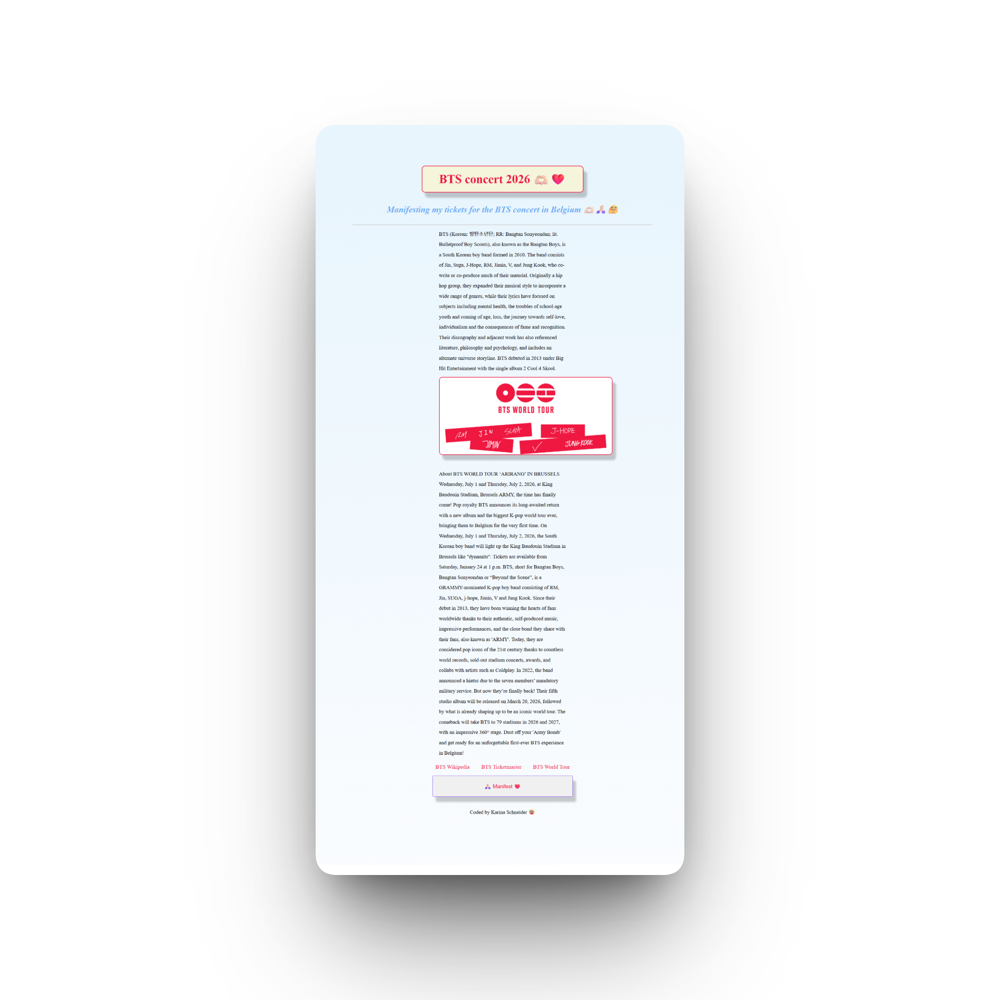
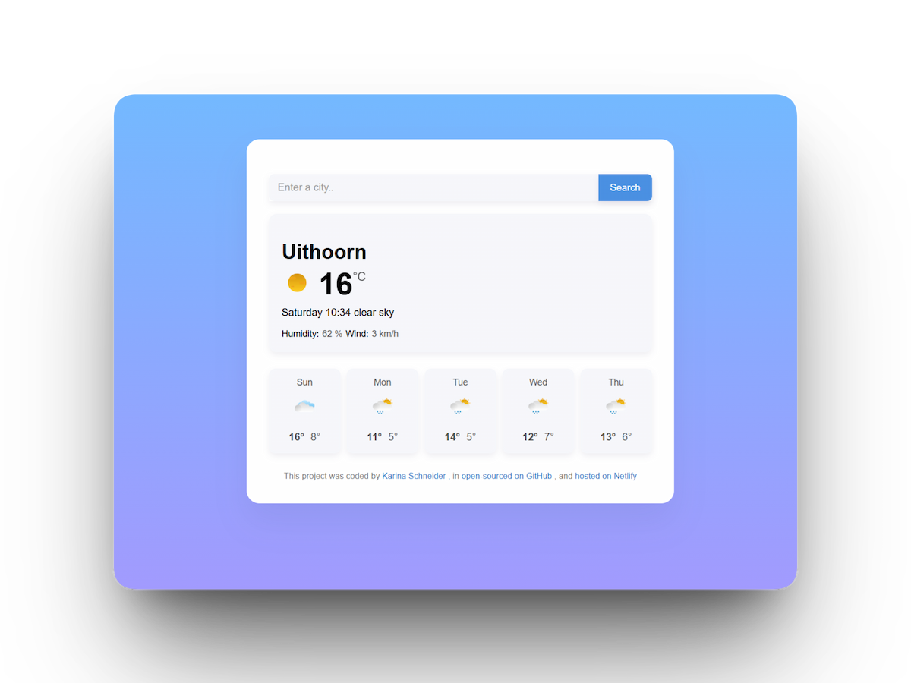
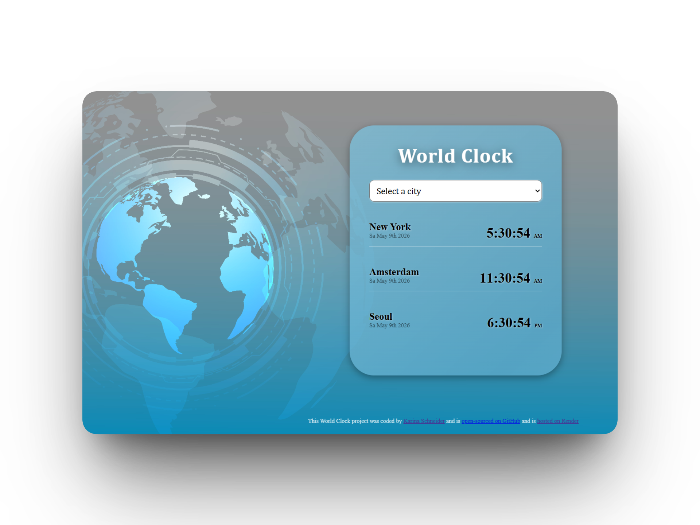
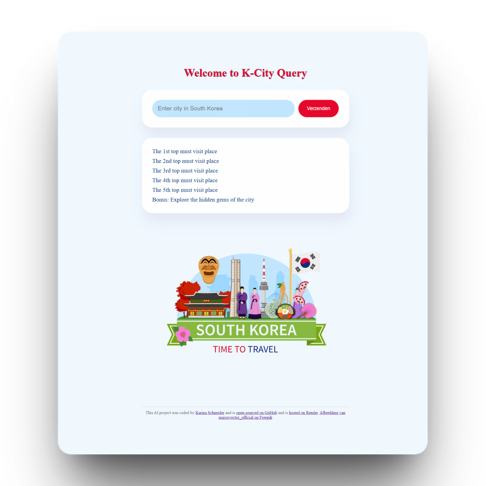

As a starting junior front-end webdeveloper, with absolute no knowledge in coding, but driven by couriosity and my eager to keep learning, I have managed to create some fun projects. They are not perfect but the point was to learn new skills. Like the famous saying "Trust the process"

A responsive manifestation page for the BTS World Tour 2026
concert in Brussels. Built with HTML, CSS and JavaScript, featuring
an interactive button with a personalized prompt, and styled with
a custom gradient background.
Fun note: this manifestation worked perfectly, I secured my concert ticket and in July 2026
i'm going to see the "7 normal boy's from Korea" for the first time 🫶🏻💜
Check the weather anywhere in the world with this clean, responsive weather app. Search any city to see current conditions and a 5 day forecast. Built with HTML, CSS, and JavaScript, with API calls handled by Axios. This was my first project working with external APIs debugging timezones taught me a lot about asynchronous JavaScript.
Learn more

My first deep dive into working with the Date object and timezones. An interactive world clock built with vanilla JavaScript and the moment-timezone library. Users can select cities from a dropdown menu to view local times updating in real time. This project was my introduction to working with JavaScript Date objects, setInterval functions, and DOM manipulation. Hosted on Render.
Learn moreWith my soon to arrive holiday in 2026, enchanted by the Korean culture and diving into coding, an idea for this project came to life. K-City Query is an AI-powered travel companion for exploring South Korea. Whether you're curious about the best street food in Seoul or hidden temples in Busan, just ask and get instant AI-generated answers. Built with HTML, CSS, and JavaScript, featuring a typewriter.js effect for a more interactive feel.
Learn more